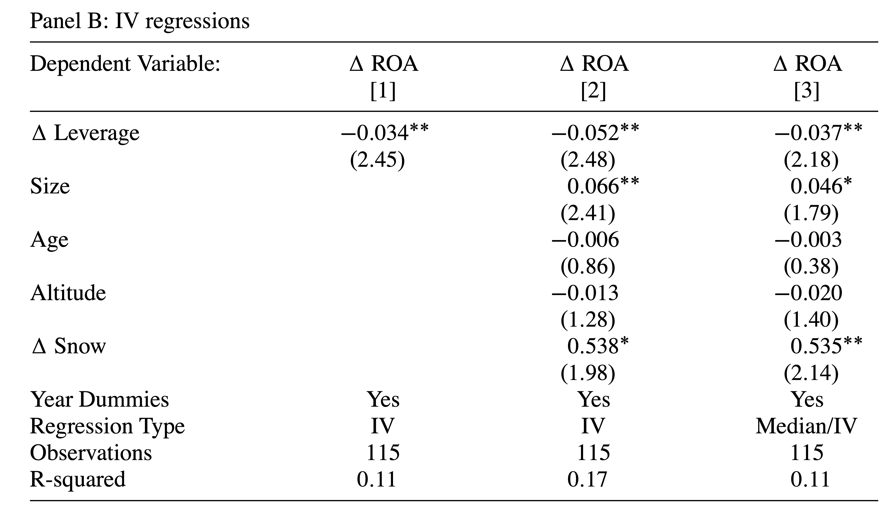

MATH60207: Séance 9
Adapté des diapositives par Pat Akey (Université de Toronto & INSEAD)
Plan
IV
- Variables Instrumentales
- Erreurs Potentielles
- Exemple d’IV
- IV en Python
Éthique dans la recherche statistique
Introduction à la méthode des VI
y = x\beta + \tilde{X}\beta_{\tilde{X}} + \varepsilon \quad \text{où} \quad E[\varepsilon|x] \neq 0 \\ \Rightarrow \widehat{\beta}_{OLS} \overset{p}{\rightarrow} \beta + \frac{Cov[x,\varepsilon]}{Var[x]} \ne \beta \quad \text{lorsque} \quad T \rightarrow \infty
Autrement dit, si un élément x de X n’est pas orthogonal à \varepsilon, \widehat{\beta}_{MCO} est biaisé (notez qu’ici on parle de \beta le coef. univarié de x, pas du vecteur de tous les coefs.)
- Supposons que nous puissions trouver une autre variable (instrumentale) qui satisfait
x = \gamma z + \tilde{X}\gamma_{\tilde{X}} + \mu \quad \text{où} \quad Cov[z,\varepsilon] = 0, \gamma \ne 0
Nous pouvons isoler la variation dans la détermination de x à travers z qui est non liée à la relation principale que nous étudions (l’effet de x sur y).
Introduction à la méthode des VI
- Nous avons besoin de deux hypothèses pour une VI valide
- Pertinence — Il doit y avoir une corrélation entre z et x conditionnelle à toutes les autres variables dans un système c’est-à-dire \gamma \ne 0
- Exclusion — La variable peut être exclue de l’équation principale d’intérêt.
Deux parties importantes à cette hypothèse :
- La seule relation entre z et y passe par la relation de la première étape
- Conditionnellement aux covariables (\tilde{X}), l’instrument est aussi bon que réparti aléatoirement
Variation et VI
Variation et VI

Variation et VI
D’où viennent les bons instruments?
- L’IV a été initialement développée comme une technique pour estimer des systèmes d’équations (par exemple, l’offre et la demande d’oranges)
- Utiliser la pluie pour instrumenter l’offre afin d’isoler les perturbations dans la quantité et le prix le long d’une courbe de demande
Les bons instruments ont un lien économique crédible pour la pertinence et une raison logique d’exclusion
- La pertinence peut être testée car il s’agit d’une corrélation partielle
- L’exclusion ne peut pas être testée, elle doit donc être argumentée sur la base d’un raisonnement logique
Les (bons) instruments courants comprennent les événements physiques, les changements institutionnels, etc.
Les mauvais instruments courants incluent des variables retardées (lags) et des moyennes de groupe excluant un membre individuel
Restriction d’exclusion
- L’hypothèse d’exclusion ne peut pas être testée
- Nous n’observons jamais les vraies erreurs d’un modèle, donc nous ne pouvons pas tester si elles sont corrélées avec notre instrument
- De plus, les résidus estimés seront toujours orthogonaux à toutes les covariables dans une régression, donc nous ne pouvons pas “tester” si une variable potentiellement endogène est corrélée avec l’erreur d’une régression
Les chercheurs doivent fournir des preuves soutenant que la restriction d’exclusion pourrait tenir
Les tests placebo peuvent être utiles
- Peut-être y a-t-il une région ou une période où nous pensons qu’un effet ne devrait pas être présent
- Y a-t-il d’autres résultats où les histoires de confusion auraient des implications qui peuvent être testées ?
Biais et VI
- L’estimateur VI est cohérent, mais biaisé dans les échantillons finis vers l’estimateur MCO
- Parce que la première étape est estimée (avec bruit), il y a un biais sauf si l’échantillon soit vraiment grand
Puisque (asymptotiquement) \widehat{\beta}_{2SLS} = \beta + \frac{Cov[\epsilon,z]}{Cov[x,z]}, dans des échantillons finis, nous divisons le biais potentiel par la force de l’instrument, donc il est vraiment important d’avoir un instrument fort
- L’ajout d’instruments faibles aggrave le problème
Plusieurs articles suggèrent d’avoir une statistique F pour la première étape sur l’instrument supérieure à 10 ou plus.
- Les meilleures pratiques évoluent
Inférence avec des instruments faibles (mais valides)
- L’imposition de filtres (comme un seuil de statistique F) peut induire des distorsions dans les spécifications/magnitudes rapportées
- Les instruments faibles ne posent problème que lorsqu’il y a une violation de la restriction d’exclusion — les filtres excluront des cas de bons instruments qui ont une faible puissance — et identifieraient autrement des magnitudes causales utiles
- Comme les seuils de p-value

Sur-identification
- Considérez une seule variable endogène dans une équation. S’il y a plus d’un instrument pour la variable, elle est sur-identifiée. Dans ce cas, il y a un “test” pour montrer si un instrument par rapport à un autre instrument fournit des estimations différentes
- MAIS ils pourraient tous être de mauvais instruments…
Exemple d’IV — Neige et Effet de Levier
- Giroud et al. (2012) (GMSW) étudie si la réduction du surendettement améliore la performance des entreprises
- Question importante, mais difficile de trouver une variation exogène de l’annulation de la dette
Les auteurs examinent les changements “inattendus” de la quantité de neige sur les stations de ski autrichiennes
Regardez au sein de l’ensemble des entreprises qui ont réalisé une restructuration de la dette pour essayer d’identifier celles qui étaient des défauts stratégiques — c’est-à-dire ces entreprises qui ont fait défaut malgré des circonstances “favorables”.
Histoire économique — ces entreprises qui avaient renégocié et avaient reçu une quantité inattendue de bonne neige étaient probablement sous-investies ou paresseuses, tandis que celles qui avaient de la mauvaise neige étaient plus susceptibles d’être des défauts de liquidité
Possible si les prêteurs ne peuvent pas s’engager ex-ante de manière crédible à une liquidation ex-post inefficace
Une alternative évidente est que les gestionnaires qui font défaut malgré une bonne neige sont de mauvais gestionnaires. Les auteurs tentent de résoudre ce problème.
GMSW
Notez que leur histoire ne concerne pas la quantité de neige, mais la neige inattendue
Le cadre économique plaide pour la pertinence
La restriction d’exclusion ((1) que conditionnellement aux covariables la variation est aléatoire et (2) que le soulagement de la dette stratégique est le seul canal en jeu) repose sur quelques points
- L’analyse principale porte sur les entreprises en restructuration — donc l’analyse regarde au sein de l’ensemble des entreprises en restructuration et isole la variation de la manière dont la dette a été restructurée, donc les histoires alternatives doivent expliquer la variation au sein de ces entreprises
- Les auteurs contrôlent pour le montant de neige (et celle-ci a un effet dans la direction prévue), donc les explications alternatives ne peuvent pas porter sur la quantité de neige
Les auteurs commencent d’abord par des régressions MCO — ils constatent qu’une augmentation de l’effet de levier est corrélée avec une augmentation du ROA
Ensuite, ils instrumentent le changement d’effet de levier par une neige anormalement élevées ou faibles au cours des dernières années
Enfin, ils montrent les résultats de la deuxième étape
Estimation IV

- Le coefficient est négatif — conforme à la justification économique de l’instrument
- La corrélation est forte — F-Stat de \beta=0 est 10,3 — Important pour s’assurer que la condition de pertinence est remplie
OLS

IV Deuxième Étape

- Les résultats IV inversent le signe par rapport aux résultats MCO, suggérant que l’approche IV était importante
- Les auteurs interprètent leurs résultats comme suggérant que la restructuration causée par des défauts stratégiques mène à un meilleur ROA car les gestionnaires/actionnaires sont mieux incités
Restriction d’exclusion et biais
- Nous avons dit précédemment que l’hypothèse d’exclusion ne peut pas être testée
- Nous n’observons jamais les vraies erreurs d’un modèle, nous ne pouvons donc pas tester si elles sont corrélées avec notre instrument
- De plus, les résidus estimés seront toujours orthogonaux à toutes les covariables dans une régression, donc nous ne pouvons pas “tester” si une variable potentiellement endogène est corrélée avec l’erreur d’une régression
Les chercheurs doivent fournir des preuves soutenant que la restriction d’exclusion pourrait tenir
Puisque l’échantillon de GMSW est petit, le biais pourrait être un problème mais ils trouvent une VI qui est opposée au MCO et leur instrument est fort, c’est donc moins un problème (rappelez-vous que les petits écarts par rapport à l’exogénéité sont un problème avec de petits échantillons et des instruments faibles)
Derniers points sur les VI
- La première étape doit être linéaire afin de garantir des estimations de deuxième étape cohérentes
- Les variables endogènes binaires ne doivent PAS être estimées par probit/logit
- Toutes les variables de la deuxième étape doivent être incluses dans la première étape, sinon les estimations sont incohérentes
- L’inférence statistique dans le second stade doit être faite sur des données réelles (non estimées). (le module
linearmodelsle fait automatiquement) - I peut également être utilisé pour corriger une erreur de mesure s’il s’agit d’un problème et que vous disposez d’un instrument plausible
Éthique dans la recherche statistique
Expert: une personne ayant une compétence accréditée dans un domaine que l’on consulte pour prendre des décisions plus éclairées.
Les professions d’expert courantes incluent les médecins, les avocats et les comptables.
Après votre maîtrise, que vous deveniez analyste, consultant, chercheur ou toute autre profession connexe, vous serez traité comme un expert dans le domaine.
Compte tenu de la différence de connaissances, la possibilité d’un aléa moral existe entre un expert et un client.
Éthique dans la recherche statistique
Les codes d’éthique sont l’un des moyens utilisés pour atténuer ce problème et améliorer le bien-être des experts et des clients.
En finance empirique, le code d’éthique de l’American Statistical Association sont généralement pertinentes.
Pour les praticiens de la finance, le code d’éthique de l’Institut CFA et le code de conduite de votre employeur seront utiles.
Notez que chaque expert doit avoir l’impulsion initiale d’agir de manière éthique avant que ces références ne deviennent utiles. Ne sous-estimez jamais l’importance de votre propre boussole morale.
American Statistical Association
La plus grande communauté mondialement reconnue de statisticiens. Fondée à Boston en 1839 et a depuis soutenu l’excellence dans le développement, l’application et la diffusion de la science statistique à travers divers événements.
- Énoncé de mission : Promouvoir la pratique et la profession de la statistique.
- Énoncé de vision: un monde qui s’appuie sur les données et la réflexion statistique pour favoriser la découverte et éclairer les décisions.
American Statistical Association
“All practitioners of statistics, whatever their training and occupations,
- have an obligation to work in a professional, competent, and ethical manner
- and to discourage any type of professional and scientific misconduct.”
“All stakeholders have an obligation
- to act in good faith,
- to act in a manner consistent with these guidelines
- and to encourage others to do the same.”
“Above all, professionalism in statistical practice presumes the goal of advancing knowledge while avoiding harm; using statistics in pursuit of unethical ends is inherently unethical.”
Professional Responsibilities
…the term “statistician” includes all practitioners of statistics and quantitative sciences, regardless of job title or field of degree, comprising all … members of other professions who utilize and report statistical analyses…
The ethical statistician accepts full responsibility for his/her professional performance.
Examples of not taking responsibility
- It’s wrong, but everyone does it.
- If I don’t do it, they’ll get someone else who will.
- I told them it was wrong,
but I was told I had to do it this way anyhow. - If you read it very carefully, you’ll see that, technically, I did not lie.
Professional Responsibilities
Among their most important responsibilities, statisticians need to
- Avoid slanting the analysis towards pre-determined outcomes.
- Avoid allowing your collaborators or data providers to do so!
- Use methods and approaches appropriate and valid for the context in which they are applied.
- e.g. Don’t use large sample assumptions in a small sample.
- e.g. Don’t assume normality, independence, homoscedasticity, etc. when the data aren’t.
- Note the strengths and limitations of your conclusions.
- What missing variables or untested assumptions might alter the results?
- How reliable are the data?
- Explain how you decided which of your results to report.
- Avoid, disclose and resolve conflicts of interest.
- Avoid accepting work for which you are not qualified.
Professional Responsibilities
They are also encouraged to
- Show their results in ways that are meaningful to the user / reader.
- This includes tables, models, graphics, etc.
- Help others to reproduce their results, where possible.
- Describe what you’ve done clearly and precisely enough that someone qualified should know how to replicate it.
- Share data
- Share programs
- Avoid condoning incompetent, or unethical practices.
Vardeman and Morris (2003)
The practice of statistics is inherently moral due to the serious implications of the statistician’s conclusions.
You are first and foremost a statistical researcher. If you are subject to demands that contradict accurate procedures and conduct, the impetus is on you to follow your own moral compass.
While we hope it will happen the least amount possible, you will be confronted with those situations, so be ready.
Dernières réflexions
Réfléchissez aux conséquences de la qualité de votre travail.
- Un professionnel agit en conséquence.
- Dire seulement à quelqu’un ce qu’il veut entendre ne l’aide pas.
- “Ces investissements ne sont pas risqués.” Qui cela aide-t-il ?
- La valeur de votre MSc réside dans sa crédibilité
Avant de commencer une analyse statistique, demandez-vous
- Est-ce que cela en vaut la peine ? Même si je ne trouve pas les résultats attendus? souhaités?
Un bon travail ne doit pas dépendre excessivement de la conclusion.
- Mais mon patron/professeur/client n’aimerait pas ces résultats !
Références

MATH60207
Comment cela fonctionne-t-il ?
Peut également être estimé en tant que système GMM
\widehat{\beta}_{2SLS} \overset{p}{\rightarrow} \frac{Cov[z,y]}{Cov[z,x]} = \beta + \frac{Cov[\epsilon,z]}{Cov[x,z]} \quad \text{lorsque} \quad T \rightarrow \infty